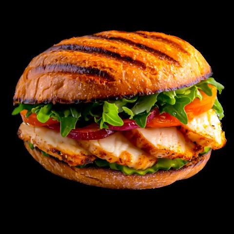
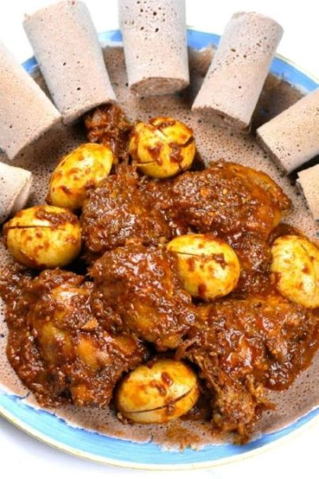

Vegetable Soup
It is a flavorful broth made by simmering a mix of variety fresh vegetabels

Welcome to the Hiruy Recipe Platform, which is best as its name! you will get top recipes for your favorite foods.Explore our collection and start cooking today.
It is a flavorful broth made by simmering a mix of variety fresh vegetabels
It is a delicious food which consists of grilled chicken with different spices and vegetables packed in toasted bun.

It is a popular Ethiopian chicken stew simmered with boiled eggs in a sauce of onions and berbere.
